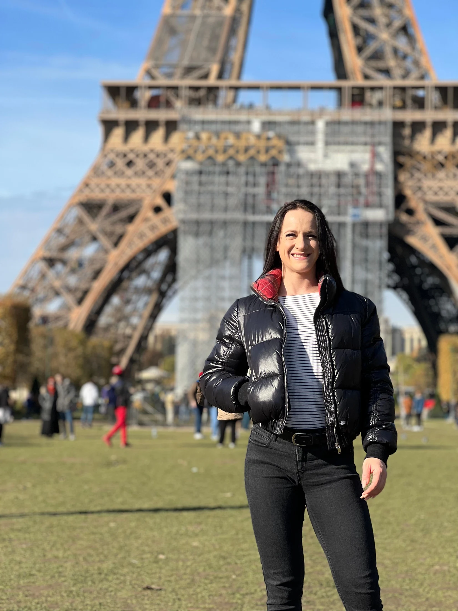
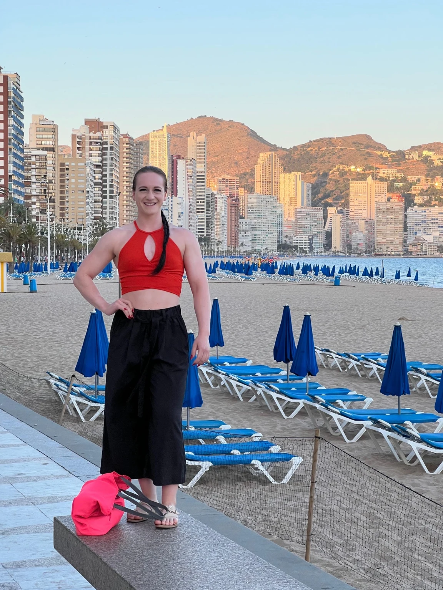

Eidgenössischer Fachausweis Fitnessinstruktor
Fachliche Grundlage meiner Arbeit im Fitnessbereich.
Über Tatjana
Ich bin Tatjana. Kraftsport, Ernährung und die Frage, was uns im Alltag wirklich guttut, begleiten mich seit vielen Jahren.
Bewegung und Erholung gehören für mich zusammen.
Seit über 15 Jahren trainiere ich im Kraftsport. 2021 stand ich bei einem Bodybuilding-Wettkampf in der Figur-Klasse auf der Bühne. Diese Erfahrung ist ein Teil meiner Geschichte – genauso wie meine langjährige Beschäftigung mit Ernährung und verschiedenen Ernährungskonzepten.
Auch eigene Erfahrungen mit zyklusbedingten Beschwerden und hormonellem Wohlbefinden haben meinen Blick erweitert. Heute möchte ich Menschen dabei unterstützen, ihre Ziele zu verfolgen und ihre Lebensqualität zu verbessern.
Seit ungefähr 2015 bin ich nebenberuflich selbstständig. Der persönliche Kontakt und eine gründliche, empathische Begleitung stehen für mich im Mittelpunkt.
Was ich mitbringe
Fachliche Grundlage meiner Arbeit im Fitnessbereich.
Langjährige persönliche Auseinandersetzung und Selbststudium. Keine medizinische oder therapeutische Ausbildung.
Selbststudium zur Einordnung im Zusammenhang mit Ernährung, Training und Lifestyle. Medizinische Interpretation und Diagnostik bleiben ärztliche Aufgaben.
Meine Haltung
Deine Erfahrungen und Bedürfnisse sind der Ausgangspunkt.
Wir betrachten mögliche Zusammenhänge zwischen Bewegung, Ernährung, Erholung und Alltag.
Wir suchen Schritte, die zu deinen Möglichkeiten passen.
Ein Teil meiner Geschichte
Mein Wettkampf in der Figur-Klasse 2021 gehört zu meinem sportlichen Weg. Heute bringe ich diese Erfahrung in eine Begleitung ein, die deine persönlichen Ziele und deinen Alltag berücksichtigt.
Persönliche Einblicke
Reisen, neue Eindrücke und Zeit für sich selbst: Diese Bilder zeigen weitere Seiten meines Lebens.


Dein nächster Schritt
Erzähl mir, wo du stehst und was du verändern möchtest.
Beratungsgespräch anfragen ↗